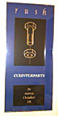
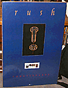
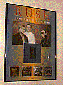

"album promo in stores"
16" x 36"
Blue background with nut & bolt in center. "Rush" is at the top in gold print,
"Counterparts" in the center in white, and "In Stores October 19th" written in
gold at the bottom.
|

"album promo with cows"
20" x 30"
Blue background w/ nut & bolt in the center, "lock stock barrel" picture
at the bottom, with COUNTERPARTS written across the bottom in red.
|

"juno awards"
18" x 24"
Poster commemorating Rush's induction into the Juno Hall of Fame. Has band
portrait with Counterparts cover over a blue/yellow background. Smaller album
covers of Chronicles, Roll The Bones, Presto and Moving Pictures are at the
bottom. "Juno Hall of Fame 1994" is at the top.
|